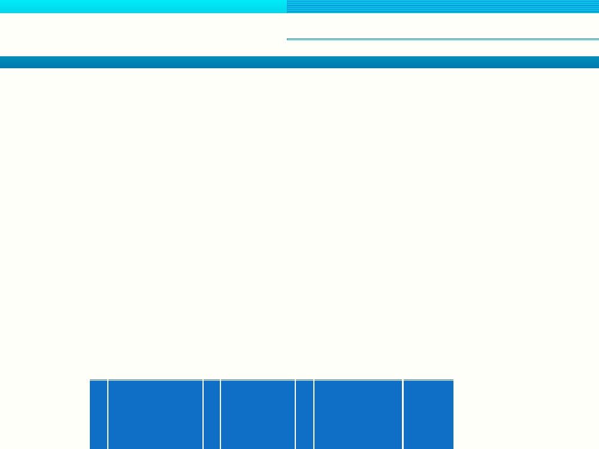
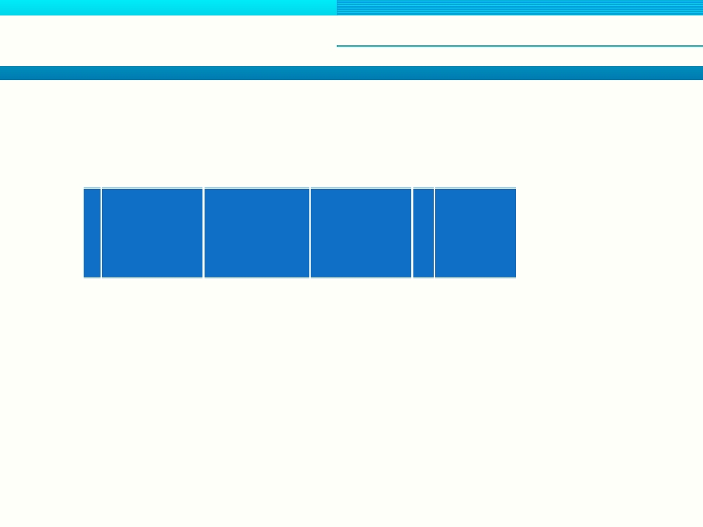
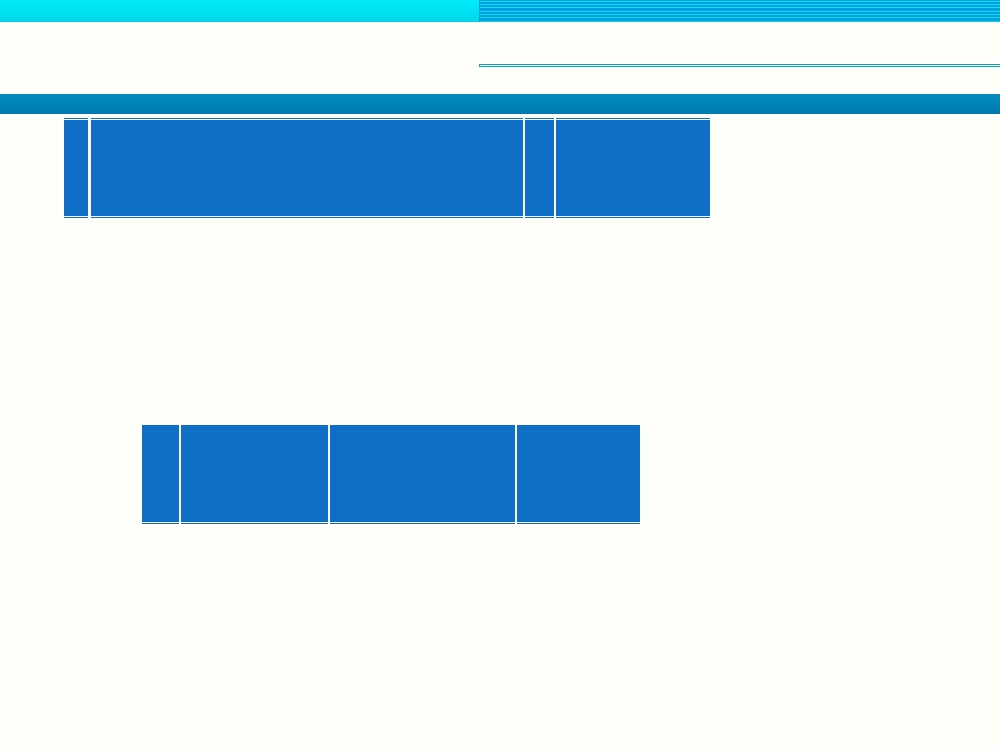
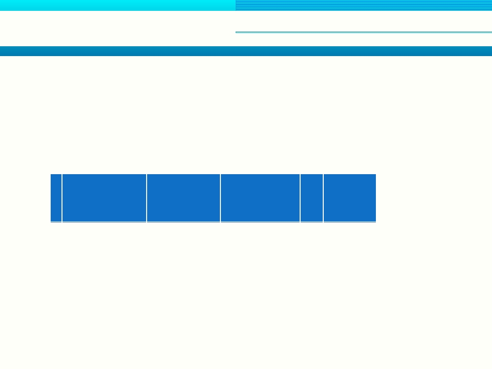

Second Generation Mobile Systems
(2G Mobile Systems)
Prepared By:
TEJBIR SINGH

Interim Standards (IS-54, IS-136)
Standardised by TIA & EIA together in USA(1990) and
Canada, and later became the ANSI standard.
Known as Digital AMPS(D-AMPS)
Use existing AMPS channels
Use TDMA/FDD for channel multiplexing which
divides 30KHz channel pair into 3 time slots.
IS-136 added extra features like SMS and Circuit
switched data(CSD) to IS-54.
Use CMEA for encryption of data
Use π/4 DQPSK modulation

IS-95 (CDMA One)
First CDMA-based digital cellular standard pioneered by
Qualcomm, USA (first use 1995).
Also known as TIA-EIA-95 and brand name is cdmaOne.
Unlimited cell size, low transmitter power permits large
cells.
BTSs synchronize with the help of GPS.
Operate in 800MHz frequency range as IS-54,136.
Modulation scheme QPSK.
Channel width 1.23 MHz and data rate 9.6-115 kbps.
Use soft handoff reducing the likelihood of the dropped
calls.
Uses a unique spreading code technique to differentiate
the channels known as PN coding.

Global System for Mobile Communications
(GSM)
Fundamentals

GSM-History
In 1982, CEPT created the Group Special Mobile(GSM) to
develop a mobile phone standard to be used across
Europe.
In 1987, MoU was signed by 13 countries for GSM in
Europe, and TDMA was chosen as digital transmission
technique.
In 1989, GSM responsibility was transferred to ETSI and
under ETSI GSM named as Global System for Mobile
Communications.
In 1990, first phase of GSM specifications was published.
In 1991, first GSM network was launched by Radiolinja in
Finland with joint technical infrastructure maintenance
from Ericsson .
In 1992, first GSM 900 commercial network was launched
in Germany. Roaming and security were the important
features for the subscribers.

GSM-History
In 1993, Australia became first Non-Europeon
country to sign the MoU.
In 1994, first commercial GSM 1800 (DCS 1800) was
launched in UK.
In early 1995, TIA(U.S.) adopted specification for GSM
1900 and first network was launched in late 1995.

GSM-Objective
To balance three conflicting requirements:
- Ensuring adequate voice quality
- Maximising system capacity
- Providing necessary coverage
Speech is digitised at 13 kbps(6.5kbps)unlike 64 kbps in
PSTN.
Using TDMA, a radio channel can carry 8 calls while
analog mobile network can only carry one call, however,
GSM required 8 times the bandwidth, so there is no
immediate increase in the capacity.
A small portion of radio frequency spectrum is available
for GSM - typically 124 carrier frequencies and 1 carrier
frequency for guard, and this to be shared b/w each GSM
network operator in the country.

GSM-Services
Telephony (also referred to as tele-services) Services
- Voice services, includes full-rate speech at 13 kbps
and emergency calls
- SMS etc
Data (also referred to as bearer services) Services
- HSCSD,
- GPRS etc
Supplementary Services
- Call forwarding
- Call barring etc

GSM-Cellular Concepts
A cell is defined as a geographical area covered by a
single Base Station Transceiver (BTS).
A cell size is affected by:
- Output power of BTS
- geographical location
- Antenna characteristics such as height.
The standard cell representation is hexagonal or
honeycomb pattern.
Using low power transmitter allows efficient re-use of the
available frequencies.
Co-channel interference is avoided by having sufficient
distance b/w the cells using same frequency.
A cluster is defined as a group that uses all of the available
frequencies allocated to an network operator.

GSM-Cellular Concepts
Cell clusters are repeated through the coverage area
of the network operator.
Using frequency re-use and cell clusters the coverage
requirements of a network operator can be achieved.
The number of cells in a cluster is typically 4, 7, 12 and
21.
Cell splitting is used to handle the increased number
of subscribers in an area by dividing the cell into
smaller cells.
Macro cells, used in remote or sparsely populated
areas and cover 10 – 35 KM.
Micro cells, used in urban areas and cover up to 2 KM.

GSM-Cellular Concepts
Pico cells covers up to 200M distance
Selective cells (or sectored cell) are used to restrict
the transmitted signal within a particular area, and
most common coverage scheme used transmits at 120
degree.
Umbrella cell is a large cell that is the superimposed
of smaller cells.

GSM-Reference Model
A GSM network system comprises following network
sub-systems.
MS –Mobile Stations
BSS - Base Stations Subsystem
NSS - Network and Switching Subsystem
OSS - Operation and Support Subsystem

GSM-MS
The MS is composed of Mobile Terminal(also known as
Mobile Equipment) and a Subscriber Identity
Module(SIM).
Mobile Terminal are:
- Fixed , installed in car, maximum output power is 20 W
- Portable , maximum output power 8 W
- Handheld , Maximum output power 2W
PIN, the Personal Identification Number is used to prevent
the subscriber from unauthorized access.
SIM contains:
-International Mobile Subscriber Identity(IMSI)
-Mobile Station ISDN(MSISDN)
-Temporary Mobile Subscriber Identity(TMSI)

GSM-BSS
BSS caries out all the radio related functions and is responsible
for transmission and reception of the radio signals.
BSS consists of Base Transceiver Station (BTS) and Base
Station Controller(BSC).
BTS contains :
-Transceiver, a radio equipment for transmission and
reception
- Antennas
- Equipment for encryption/decryption of communication
with BSC
A BTS can have a number of transceivers depending upon the
user density.
A BTS is usually located at the centre of the cell ( an omni-
directional cell)or may cover a number of cells(sectored cells).

GSM-BSS
BSC typically controls a group of BTS and manages all
radio-related functions.
Functions of BSC includes
- Allocation of frequency to MS
- Call handover b/w the BTS controlled by a BSC
- Monitor radio frequency power levels in BTS
- Provides physical link b/w BTS and MSC

GSM-NSS
The Network and Switching Subsystem (NSS) carries
out main switching functions and composed of:
- Mobile services Switching Centre(MSC)
- Gateway Mobile services Switching Centre(GMSC)
- Home Location Register(HLR)
- Visitor Location Register(VLR)
- Authentication Centre(AuC)
- Equipment Identity Register (EIR)
Manages communication b/w mobile subscriber and
in GSM network and other subscribers e.g.
PSTN/ISDN

GSM-MSC
MSC is the central component of the NSS and is
responsible for routing of traffic and signalling
information in the network.
Functions of the MSC include
- Registration
- Location updating
- Arrange handovers from BSC to BSC.
- Arrange handovers from this MSC to another.
- Support supplementary services such as
conference calls or call hold.
- Generate billing information.
- Deliver SMSs from subscribers to the short message
service centre (SMSC) and vice versa

GSM-GMSC
GMSC is specialized MSC used to interface with the fixed
network (PSTN/ISDN).
All calls b/w GSM network and fixed network are routed
via the GMSC.
Gateway is often implemented in a MSC and then MSC is
referred as GMSC.
A Gateway Mobile Switching Centre provides an edge
function within a PLMN (Public Land Mobile Network).
It terminates the PSTN (Public Switched Telephone
Network) signalling and traffic formats and converts this
to protocols employed in mobile networks.
For mobile terminated calls, it interacts with the HLR
(Home Location Register) to obtain routing information

GSM-HLR
The Home Location Register(HLR) is the centralised database
and store all administrative information of the subscriber
registered in the network.
Also store Current Location Identity(LAI) of the subscribers and
any supplementary services allowed to the subscribers.
The permanent data stored include
- IMSI number
- Supplementary services (call forwarding etc)
- Authentication information.
There can be several logical, and physical, HLRs per PLMN,
though one IMSI/MSISDN pair can be associated with only one
logical HLR (which can span several physical nodes) at a time.
The HLR stores details of every SIM card issued by the mobile
phone operator.
Each SIM has a unique identifier called an IMSI which is the
primary key to each HLR record

GSM-HLR
MSISDN is also a primary key to the HLR record.
Other data stored in HLR include
- GSM services that the subscriber has requested or been given.
- GPRS settings to allow the subscriber to access packet services.
- Current location of subscriber (VLR and serving GPRS support
node/SGSN).
- Call divert settings applicable for each associated MSISDN
HLR is connected to
- GMSC to handle incoming calls
- VLR to handle request from MS
- SMSC to handle incoming SMS
- Voice mail to notify MS of incoming voice message
- AuC for authentication and ciphering

GSM-VLR
The Visitor Location Register(VLR) is temporary
database that contains both subscriber information
and information related to the MSC service area in
which subscriber is currently located.
There is one VLR in each MSC in the network.
When a subscriber moves from one MSC area to
another, the VLR of new MSC requests to the
subscriber information from the HLR. The contacted
HLR also updates itself with the new location of the
subscriber.
A subscriber cannot be present in more than one VLR
at a time.

GSM-VLR
Data stored in a VLR include
- IMSI
- Authentication data
- MSISDN
- GSM services that the subscriber is allowed to
access.
- Access point (GPRS) subscribed
- HLR address of the subscriber
VLR is connected to
- VMSC to pass needed data for its procedure
- HLR

GSM-AuC
The AuC provides authentication and encryption
parameters that verify the user's identity and ensure the
confidentiality of each call.
AuC is connected to HLR in the network.
The security depends upon a shared secret between the
AUC and the SIM called the K i .
The K i is securely burned into the SIM during manufacture
and is also securely replicated onto the AUC.
K i is never transmitted between the AUC and SIM, but is
combined with the IMSI to produce a challenge /response
for identification purposes.
An encryption key called K c for use in over the air
communications.

GSM-EIR
The Equipment Identity Register for security purposes to
verify all equipments accessing the network.
EIR is the database that stores a list of IMEI of all mobile
terminals.
Every mobile-terminal is given a tamper-proof equipment
number IMEI during the manufacture.
EIR stores three list for all the IMEIs
- A white list, terminal is allowed to access network
- A black list, terminal is not allowed to connect the
network(for example , if terminal is reported stolen and is
now barred)
- A grey list, faulty or non-approved equipment
Often integrated to the HLR

GSM-Network Structure
A GSM network is composed of GSM Service Area, PLMN
Service Area, MSC Service Area, Location Area, and Cell.
GSM Service Area – Geographical area in which a mobile
subscriber can access a GSM network.
PLMN Service Area - Geographical area served by a single
network operator
MSC Service Area - Geographical area controlled by a
single MSC in a PLMN.
Location Area – MSC service area is further subdivided in
smaller geographical areas known as Location Areas(LA).
A Location Area is a group of cells and is uniquely
identified by its Location Area Identity(LAI) stored in
VLR.
Cell – Geographical area covered by a single BTS. Within
an LA, each cell is uniquely identified by it Cell Global
Identity(CGI).

GSM-Network Operations
Synchronization – When an MS is switched on, it synchronizes itself
with the radio transmission from BTS. Then reads network
information from a dedicated control channel including the network
identity and the LAI.
Registration – This informs the network whether an MS is
attached(switched on) or detached(switched off). The status of the
MS is registered through its IMSI marked as attached or detached in
HLR. When MS is switched off it informs the network by de-
registering itself with the HLR.
Location Update – When an MS enters a new LA or MSC service
area, it recognize new LAI and will have to inform the network about
its new location by informing VLR. VLR then informs HLR of change
in the MS location. This called Location Update.
Paging – used by network for call routing. Network broadcast TMSI
of the MS on Paging channel.
Identification – During Registration and location update, IMSI is
validated against the IMSIs stored in HLR.
Authentication – MS authenticates its identity with AuC.

GSM-PSTN to MS Call
PSTN local exchange sets up connection to nearest GMSC
in the PLMN.
GMSC requests HLR for information of the called MS.
HLR returns status(attached or detached) of the MS along
with MS LAI.
To route call to the correct MSC, HLR requests MSC
Service Area’s VLR for routing number(MSRN). The
MSRN contains all necessary information to route the call
request to correct MSC. HLR translates MSISDN number
into IMSI before it forwards IMSI along with the request
for a MSRN.
MSC returns the MSRN to GMSC via HLR and then GMSC
routes the call to the MSC.
MSC sends paging message to all BSCs in the subscriber’s
LA to begin paging to MS.

GSM-PSTN to MS Call
BSCs passes paging message to the all BTS in the LA.
BTSs transmit TMSI of the MS over the radio paging
channel.
MS detects its own TMSI on the paging channel and
sends paging acknowledge message back to the BTS.
A traffic channel is allocated by the BSC to the MS
and call is then set up.

GSM-MS to PSTN Call
MS subscriber dials the PSTN number for voice
service.
A call request message is sent by MS to MSC via BTS
& BSC, and the MSC marks MS as busy in VLR.
MS identification and authentication are carried out.
After successful verification , an call accepted
acknowledge is sent to MS by MSC.
MS sends the dialled PSTN number to MSC where
number is identified as PSTN number and call then
routed to the PSTN via GMSC.
When call is setup, MSC allocates a traffic channel to
the MS.

GSM-International Roaming
In order for an MS to make or receive calls while roaming
in a GSM visited PLMN, there must be roaming
agreement b/w the home network operator and the
visited network operator.
When an MS while roaming internationally is switched on,
it will attempt to locate a PLMN that it is allowed to
access.
MS compares the network identity with the lists of
forbidden PLMNs stored in SIM.
Only emergency calls are allowed in case MS does not
identify accessible PLMN, other wise MS can proceed to
register with the visited PLMN.
HLR in the home network must now be updated during
registration.

Global System for Mobile Communications
(GSM)
Air Interface

GSM-900 Frequency Spectrum
The size of GSM900 frequency spectrum is 25MHz .
Uplink frequency band range is 890-915MHz whereas
downlink frequency band range is 935-960MHz .
GSM900 contains 124 RF channels (channel numbers 1 to 124)
known as ARFCN.
The size of each channel is 200KHz used for traffic and control
data.
Guard bands 100KHz(channel number 0) wide are placed at
lower end of the frequencies.
Duplex Spacing, the spacing between uplink and downlink
channel is 45KHz .
The Extended GSM i.e E-GSM added 50 more channels (channel
numbers 974 to 1023) to the original GSM-900 band.
The channel number o is returned for use and channel number
974 used for guard band.
In E-GSM uplink frequency band range is 880-915MHz whereas
downlink frequency band range is 925-960MHz .

GSM-1800 Frequency Spectrum
The size of GSM1800 frequency spectrum is 7 5MHz .
Uplink frequency band range is 1710-1785MHz whereas
downlink frequency band range is 1805-1880MHz .
GSM1800 contains 374 RF channels (channel numbers 512
to 885).
The size of each channel is 200KHz used for traffic and
control data.
Duplex Spacing, the spacing between uplink and downlink
channel is 95KHz .
GSM-1800 is also called DCS in the United Kingdom, while
being called PCS in Hong Kong (not to mix up with GSM-
1900 which is commonly called PCS in the rest of the
world.)

GSM-1900 Frequency Spectrum
GSM1900 is used in North America and Canada as
frequencies specified in GSM1800 were used for point-to-
point links.
The size of GSM1900 frequency spectrum is 60MHz .
Uplink frequency band range is 1850-1910MHz whereas
downlink frequency band range is 1930-1990MHz .
GSM1900 contains 299 RF channels (channel numbers 512
to 810).
The size of each channel is 200KHz used for traffic and
control data.
Duplex Spacing, the spacing between uplink and downlink
channel is 80KHz .
GSM1900 is also called PCS in the rest of the world other
than Hong Kong.

GSM-850 Frequency Spectrum
GSM850 is used in North America and Canada as
frequencies specified in GSM900 were used for other
services.
The size of GSM850 frequency spectrum is 25MHz .
Uplink frequency band range is 824-849MHz
whereas downlink frequency band range is 869-
894MHz .
GSM850 contains 124 RF channels (channel numbers
128 to 251).
The size of each channel is 200KHz used for traffic
and control data.
Duplex Spacing, the spacing between uplink and
downlink channel is 4 5KHz .

GSM-Reliable Communication
To minimize combined effects of noise, interference and multipath
propagation, GSM uses a number of techniques to ensure reliable
communication over the radio channel. These include:
- Channel coding
- Power control
- Channel equalization
Noise type can be divided as below:
- Random noise , generated from natural or man made source.
- Interference , generated when unwanted signal shares same
frequency as affected signal. The main source of the interference
derives from the transmitters on the adjacent frequency channels
(resulting in adjacent channel interference ), and distant
transmitters that shares the same frequency channel(resulting in co-
channel interference ).
Chanel coding is used to minimize the effect of random noise and
interference. GSM uses convolution coding and interleaving to
implement channel coding.

GSM-Reliable Communication
Co-channel interference is addressed by power control. In
this technique, output power of the MS is continually
controlled by BTS to ensure that it transmits at the
minimum power necessary for reliable communication.
The level of interference is defined by carrier-to-
interference ratio(C/I), where a minimum value 12 dB is
required by GSM.
To address the adjacent channel interference caused
because of switching transient (TDMA), MS transmitter
power is ramped up and down on a controlled manner by
defining a power-versus-time template.
The multipath propagation causes the received signal to
become distorted or spread-out in time which leads to
Inter-Symbol Interference(ISI) which causes errors in the
digital system.

GSM-Reliable Communication
Another consequence of multipath propagation is that the
different delayed versions of the original transmitted
signal arrive at the receiving antenna with different
phases. These can combine constructively or destructively
resulting in rapid fluctuations in the amplitude of the
received signal. This phenomena is called fast fading or
Rayleigh fading .
Rayleigh fading can cause variations of up to 40 dB in the
received signal strength.
Channel Equalization is used to address Rayleigh fading.
The effect of multipath propagation is to cause pulses to
become smeared or spread-out in time(known as
Dispersion) . The extent of this spread is quantify by
delay spread , which is a function of the particular
environment involved. In the rural area, delay spread is
small, typically <0.2 µs, however in urban area it can as
GSM-Reliable Communication
Coherence bandwidth is related to delay spread and is a
statistical measure of the range of the frequencies over
which all spectrum component will experience the same
multipath propagation effects.
For typical urban delay spread of 2µs, the coherence
bandwidth is 100KHz.
If a channel bandwidth is greater than coherence
bandwidth , the channel is considered f requency-
selective . GSM channels are frequency-selective.
Channel equalizer is used to negate the effects of
frequency selective distortion caused by multipath
propagation. In channel equalization special training
sequences(fixed bit sequence) are transmitted with each
burst. This bit sequence is known to both MS and BTS.

GSM-Reliable Communication
In GSM, eight training sequences, each of length 26
bits, have been defined. The equalizer used in GSM,
can compensate for timing delays of up to 16µs.
Doppler spread is broadening of the power
spectrum of the signal due the velocity-induced
Doppler frequency shifts.
A channel is referred fast fading if channel
bandwidth is less than doppler spread, whereas
channel is referred as slow fading if channel
bandwidth is greater than doppler spread. GSM
channels are slow fading.
In GSM900, doppler spread of an MS moving with a
velocity 120km/h is approximately 100 Hz.

GSM-Operating Powers
Five power classes for MS, are defined in GSM900,
GSM1800 and GSM1900 numbered from I, II, III, IV and V.
Vehicular and portable power units can be either class I
(20W)or class II(8W).
Handheld units can be class III(5W), IV(2W) and V(.8W).
The most typical classes are II and V.
The transmit power level of the MS is dynamically
controlled by BTS in steps of 2 dB down from the
maximum level allowed in the class to a minimum of 20
mW (13dBm).
The MS power is adjusted in a monotonic sequence of 2 dB
steps every 60 ms.
BTS determines the power level(RXLEV) and quality
level(RXQUAL) of each signal received from each MS in its
cell.

GSM-Operating Powers
The received signal power, measured in dBm, is mapped to
a RXLEV values b/w 0 and 63, where value o corresponds
to a signal level of <-110 dBm and 1 corresponds to -110 t0
-109 and so on.
The received signal quality is determined by computing
Bit Error Rare(BER) which is mapped to 8 (0-7)RXQUAL
levels, where 0 level corresponds to the best quality(BER <
2x10 raised power -3).
On the basis of RXLEV and RXQUAL, BTS determines the
minimum power required transmit power for the MS. BTS
sends power control information to the MS in 5-bit
transmit power(TXPWR) field on the downlink SACCH.
MS sends a confirmation to the BTS via the
MS_TXPWR_CONF message on the uplink SACCH.

GSM-Operating Powers
Eight power classes (numbered I through VIII) are
defined for BTS in GSM.
In GSM900, maximum BTS transmit power is 320 W
whereas in GSM1800 and GSM1900 maximum BTS
transmit power is 20 W.
In BTS use of power control is optional.
The length of each TDMA time slot is .577 ms and
each MS is allowed to transmit in its time slot and to
remain idle during the other seven time slots.

GSM-Speech Coding
Speech Coding is digitization of human speech waveform
into digital representation.
The sequence Speech coding=>Channel
coding=>Interleaving=>Ciphering=>Burst
assembly=>Modulation is used to transmit human speech
over radio interface.
In MS, speech codec(coder/decoder) is used for speech
coding. The codec used in GSM is RPE-LTP vocoder.
The RPE-LTP vocoder produces a 13 kbps output data
stream.
A vocoder is a class of codec that operates by parameter
izing human speech.
PCM is used to convert analog speech waveform in to a
digital signal.

GSM-Speech Coding
The PCM uses following sequence of operations to
produce 104kbps data.
Speech=>Filter=>Sampling(8000 Hz)=>Quantizer=>
Coder(13 bit-word)=>104 kbps
This bit rate is too high, however RPE-LTP vocoder
reduces this to 13 kbps.
The speech samples produced by PCM are processed in 20
ms blocks (speech frame), each containing 160 samples. In
RPE-LTP, speech is analysed in below three parts.
Linear Prediction Coding , the 160 speech samples are
analysed to produce 8 filter coefficients, which are
transformed in log-area-ratios(LARs) prior to
transmission. These 8 LARs are represened by 36 bits .

GSM-Speech Coding
Long Term Prediction , 160 samples(20 ms) are
subdivided into 4 sub-frame of 5 ms(40 samples). LTP
filter is characterized by a delay and a gain
coefficients of 7 bits and 2 bits respectively. Each 5 ms
frame is analysed to generate these coefficients. LTP
requires in total 36 bits for analysis 20 ms frame.
Regular Pulse Excitation , applied on each sub-
frame of 40 samples, and requires 188 bits for
analysis.
Every 20 ms RPE-LTP reads 160 13-bit(2080 bits)
quantized speech samples, and outputs a total of
(36+36+188) 260 bits of parameterized speech data,
and hence reduces 104kbps (output from PCM) to
13kbps.

GSM-Channel Coding(Speech)
Channel coding is used to control errors induced by noise,
interference and multipath propagation.
Error control in GSM uses Forward Error Correction
(FEC), in which extra bits are added to the data from
codec.
The 13 kbps output from speech codec is increased to 22.8
kbps by channel coding scheme. A combination of Block
coding and Convolutional coding schemes is used in GSM.
Before channel coding is performed, 260 bits in 20 ms
speech frame are sorted into three speech bits classes.
These are Ia, Ib and II and receive different levels of error
control.
The most important are the class Ia bits(50 bits) that
describes the filter coefficient, block amplitude and LTP
parameters.

GSM-Channel Coding(Speech)
Next important are the class Ib bits(132 bits), that
describes RPE parameters, some LTP parameters.
Least important are the class II bits(78 bits) that contains
the least critical speech parameters.
In case an error is detected in Ia class bits, SFS is used, in
which entire frame is discarded and discarded frame is
substituted by previous one. A cyclic code is used to
determine error in Ia class bits which adds 3 extra parity
bits to the Ia 50 bits.
A convolutional encoder of rate=½ and a constant length
of k=5 is used for coding.
An extra 4 all-zero bits(trail bits) are added to reset the
encoder before encoding. So input to the encoder will be
50(Ia bits)+3(parity bits)+132(Ib bits)+4(trail bits) = 189
and encoder will produce 189x2 = 378 bits after adding
redundant bits.

GSM-Channel Coding(Speech)
The class II 78 bits are not protected in any way and are
directly added to the encoder output becomes 378+78=456
bits per 20 ms. This results in 22.8 kbps output from
convolutional encoder.
Convolutional coders are best suited for randomly
distributed error and can not handle if a burst of errors
occurs.
Interleaving is used to deal with burst errors, which
spread data over a number of timeslots. The 456 bits from
the channel coder are spread over the 8 TDMA time slots
containing 57 bits sub-blocks each.
Each TDMA time slot contains 114 bits which are shared by
2 sub-blocks from different blocks. This is known as
Diagonal Interleaving .

GSM-Channel Coding(Data)
SFS can not be used in case of data transfer, rather
ARQ scheme is used in terminal equipment if data is
dropped, by requesting retransmission of the data.
Although the data rate is 9.6 kbps, however actual
data presented to the channel encoder is 12kbps.
When interleaved, the data stream is divided into 4
blocks of 60 bits each , giving a total of 240 bits.
Cyclic coding is not done in this case as error
detection is already done by the TE. However same
convolutional coder is used which adds 4-all zero bits,
giving a total of 488[(240+4)x2] bits. This does not fit
into the 456 bits per block scheme.

GSM-Channel Coding(Data)
The access of 32 bits are removed(punctured) from the
block giving 456 bits/block. The punctured bits are
replaced by the convolutional decoder at receiver end.
To restore the punctured bits , system relies on the error
control properties of the convolutional coding scheme to
replace the missing bits.
As transmission delay is less critical in data than that of
speech, so a much greater depth of interleaving may be
used.
The block of 456 bits is spread over 22 TDMA time slots
using diagonal interleaving.
Signalling data is interleaved in two phases, as this data is
most important. The signalling data contains a maximum
of 184 bits.

GSM-Channel Coding(Data)
First phase adds fire codes to the original block(184
bits). These adds 40 parity bits, giving a total of 224
bits. The fire codes are most suitable to detect burst
errors.
Seconds phase adds 4 all-zero bits to 224 bits and
then convolutional coder is used to produce
(224+4)x2=456 bits.
These 456 bits are interleaved over 4 TDMA slots
instead of 8 TDMA slots used for speech data.
This coding scheme is used for all signalling channels
except SCH, RACH and FACCH

GSM-Frame Structure
A 200KHz radio channel is identified by ARFCN. These
radio channels are accessed by various user using TDMA
scheme based upon a frame duration of 4.615 ms.
Each TDMA frame contains 8 time slots(0-7) of .577
duration assigned to an individual user. Each of these time
slots is termed as physical channel and uniquely identified
by Time slot Number(TN).
A physical channel in GSM is uniquely identified by its
ARFCN and TN.
The GSM TDMA frame contains 8 time slots, or 1250
(8x156.25)bits and has a duration of 4.615 ms.
In order to used TDD, the start of uplink frame is delayed
by 3 time slots with respect to the downlink.

GSM-Frame Structure
The TDMA frames are further grouped into high order
frames known as multiframes. Two types of multiframe
are defined in GSM.
26-frame multiframe , with duration of 120 ms and
contains 26 TDMA frame. These are used to carry user
traffic and their associated control channels.
51-frame multiframe , with duration of 235.4 and contains
51 TDMA frame. These are used exclusively for control
channels.
The multiframe structure is further built up to produce
superframes with duration of 6.12 s.
A superframe can consists of 51 26-frame multiframe or 26
51-frame multiframe and in each case total number of
frames are 1326.
The last level in the frame structure is hyperframe, which
consists of 2048 superframes or 2048X51&26 frames.

GSM-Frame Structure
Recall that a TDMA frame has duration of 4.615 ms and
contains 1250 bits, which corresponds to a bit rate of
270.833(1250/4.615*1000)kbps
The data carried in a single time slot is known as burst.
Five types burst are defined in GSM as below.
- Normal Burst
- Synchronization Burst
- Frequency Correction Burst
- Access Burst
- Dummy Burst
A Normal Burst is used to carry information on traffic
channels and control channels. The structure of normal
burst has following structure with the exception of RACH,
SCH and FCCH.
3 57
1 26
1 57
8.25
T Encrypted
Training
Encrypted GP
S

GSM-Frame Structure
Synchronization Burst is used for time
synchronization of the MS and has same tail bits and
guard period as below.
3 39
64
39
3 8.25 GP
Encrypted Extended
Encrypted
T
Training
T
sequence
Two 39 bits encrypted data carry information
regarding the TDMA frame number(FN) and Base
Station Identification Code (BSI C).
Frequency Correction Burst is used for frequency
synchronization of the MS and has same tail bits and
guard period as follows.

GSM-Frame Structure
3
142 bits fixed series of all zeros
3 8.25 GP
T
T
Random Access burst is used by MS to access the
mobile network and uses extended guard period of
68.25 bits. This guard period allows for a distance of
35 km b/w MS and BTS.
8 41 Synch.
36 Encrypted
68.25 GP
Sequence
T
This burst contains a synchronization sequence of 41
bits used for channel equalization and a block of 36
bits of encrypted data that contain access information
from the MS.

GSM-Frame Structure
The Dummy Burst is transmitted as a filter by the BTS
in unused time slots and has the same frame structure
as normal burst except that stolen bit is added to the
57 bits making the frame structure as below.
3
58
26
58
3
8.25
Mixed bits
Training
Mixed bits
GP
T
T

GSM-Security
For security in GSM, a Security expert Group was set to
integrate security features into the system.
Security in GSM is based on four principles given below.
1. Subscriber authentication is done using a cryptographic
mechanism.
2. Ciphering user data transferred on radio links.
3. The subscriber security information is stored in SIM
4. The GSM network operator maintains the secrecy of the
cryptographic algorithms and encryption keys used for
authentication and ciphering. This information is not
shared with other GSM operators.
The information before encryption is known as plaintext
and after the encryption it is called ciphertext .

GSM-Security
The user is authenticated by a challenge-and-response process. The
network challenges a user by sending a random number, and user
generates a response using the algorithm and key. The response is
sent back to the network, where it is validated.
In ciphering, data is encrypted at the transmitter and sent as
ciphertext over the radio link. At receiver decryption is used to
recover the plaintext with the same key.
GSM uses three cryptographic algorithms as below.
1. A3 algorithm, used for user authentication. It generates Signed
RESponse(SRES, 32-bit) to a Random number(RAND, 128-bit) sent by
the network using key Ki(128-bit) stored in the SIM card and AuC.
2. A5 algorithm, used for ciphering and deciphering. This uses key
Kc(64-bit) generated during the authentication procedure.
3. A8 algorithm, used to generate Ki and Kc. The A8 algorithm is
known to only to relevant operator and is stored in SIM.

GSM-Security
The ciphering process uses A5 algorithm in conjunction
with a 64-bit cipher key Kc and a 22-bit long frame
number.
The A5 algorithm generates a 114-bit encryption mask,
which is combined with channel coded data using a
modulo-2 or exclusive OR logical operation to produce
ciphertext.
A5 generates two masks during each frame duration, one
for uplink and other one for downlink

GSM-Modulation
The digital signals generated by speech coding, channel coding and
ciphering processes are known a baseband signals.
Modulation is the process to transform low-frequency baseband
signal into high-frequency bandpass signals.
The baseband signals containing user data and control signalling
information need to transformed into radio signals at 900MHz,
1800MHz and 1900MHz.
GMSK modulation scheme chosen for GSM offers a good
combinations of:
Spectrum efficiency , a good spectrum efficiency minimize the
channel separation and thus maximize number of radio channels in
a given frequency allocation. The spectrum efficiency using GMSK
is (270.833 kbps/200KHz)1.35 bps/Hz. Another spectrum
requirements to minimize out-of-band spurious emissions to avoid
adjacent channel interference.

GSM-Modulation
Error performance , is measured in terms of Bit Error Rate(BER)
and in case of GSM it should be less than 10 raised-to-power -2.
Also GMSK scheme is capable of operating in the cellular
environment where severe multipath fading is encountered.
Low Power Consumption , GMSK produces constant envelope
signal which facilitate the use of efficient class C amplifiers.
Ease of Implementation, GMSK modulation scheme is easy to
implement using LSI circuits.
GMSK is based upon a form of QPSK modulation scheme, where
4 values of the carrier wave phase are used.
The QPSK waveform can be represented in terms of its In-
phase(I) and Quadrature(Q) component and each of the 4 carrier
phases(i.e. symbols) is represented as a point in I/Q plane. Each
point has an associated pair of data bits. For example a point(1,1)
is associated with 45 degree Q value and other point lies 90
degree far from this.

GSM-Modulation
The input data stream bk, is separated into two data
streams, aI and aQ containing the even and odd bits
respectively. These two data stream has bit rate half that of
input bit rate.
In QPSK, the carrier phase changes every 2T. If either aI or
aQ changes a phase shifts of 90 degree occurs. However if
both aI and aQ changes, a phase shift of 180 degree occurs
leading to amplitude fluctuations in the detected signal and
introduces additional errors.
To address amplitude fluctuations, OQPSK introduced a
time delay of ½ bit interval between aI and aQ stream,
which causes the carrier wave phase to change every T
seconds. However the maximum phase shift is 90 degree.
The QPSK and OQPSK scheme require coherent detector
which not suited for the multipath fading environment.

GSM-Modulation
The MSK is derived from OQPSK and uses sinusoidal pulse-
shaping filters to shape the data. This gives MSK waveform a
constant envelope allowing efficient class C amplifier to be
used.
The MSK does not need coherent detector and consequently
best suited multipath fading environment. However lower
side lobes are gained in at the expense of increasing in the
width of the main lobe.
In GMSK, a Gaussian shaped filtering of rectangular pulse is
used instead of sinusoidal filtering. This has the effect
reducing both the level of the side lobes and the width of
main lobe.
The Gaussian filter has a normalized bandwidth of BT=0.3,
where B is the bandwidth of the filter and T is the bit period.

GSM-Logical Channels
A logical channel may be thought of virtual channel dedicated to
carry a particular type of data. In GSM, there are two basic type of
logical channels.
1. Traffic CHannels (TCH) , used to carry encoded speech data or
user data, on both uplink and downlink.
2. Control Channels(CCH), used to carry network control and
synchronization information b/w MS and BTS.
The TCHs are bidirectional channels. In GSM, two types of TCHs
are used.
1. Full rate traffic channels(TCH/F ), have a gross rate of 22.8 kbps
and carry user speech at 13 kbps and data at 9.6 kbps(TCH/F9.6),
4.8 kbps(TCH/F4.8) and 2.4 kbps(TCH/F2.4). This channels uses 24
frames out-of 26-frame multiframe.
2. Half rate traffic channels(TCH/H ), have gross rate of 11.4 kbps
and carry user speech at 6.5 kbps and data at 4.8 kbps(TCH4.8) and
2.4 kbps(TCH/H2.4). This channels uses 12 frames out-of 26-frame
multiframe.

GSM-Logical Channels
The CCHs are further divided into three categories as
below.
1. Broadcast CHannels(BCH ), used to broadcast cell
specific information to the MS, for example cell identity
etc.
2. Common Control CHannels(CCCH ), used to carry the
information necessary to establish a connection b/w BTS
and MS.
3. Dedicated Control CHannels(DCCH) , used for
signalling and control once a connection has been
established.

GSM-Logical Channels
The BCHs are point-to-multipoint unidirectional channels
used to broadcast network synchronization information to
MSs. There are three types of BCHs:
1. FCCH , provides the MS with system frequency reference. This
channel is mapped onto the frequency burst. The FCCH burst
is an all-zero sequence that produces a fixed tone in the GMSK
modulator output. This tone enables MS to lock its local
oscillator to the BTS clock.
2. SCH , used for frame synchronization of the MS and
identification of the BTS. This channels is mapped onto the
synchronization burst. The purpose of SCH is to allow MS to
quickly identify the nearby BTS and synchronize itself to that
BTS’s TDMA structure. Each radio burst on the SCH contains:
- The current frame clock of the BTS
- The Base station identity code(BSIC)
- An extended Training sequence that is easily detected in a
matched filter.

GSM-Logical Channels
3. BCCH , provides the MS with cell-specific information
necessary for registration on network. This channel is
always transmitted in time slot o. The BCCH carries a
repeating pattern of system information messages that
describes the identity, configuration and available
features of the BTS. These messages also provide a list of
ARFCNs used by neighbouring BTSs.
The CCCHs are group of uplink and downlink channels
which support the establishment of a dedicated
communication links b/w MS and BTS. There are three
types of CCCHs:
1. PCH , a downlink channel used to inform MS of an
incoming call.

GSM-Logical Channels
RACH, an uplink channel used by MS to request a dedicated
channel from the network.
AGCH, a downlink channel used to carry the response of the
network to the RACH request from an MS.
The DCCHs are used to transfer messages b/w MS and BTS. The
DCCHs consists of:
1.
SDCCH , is used to exchange signalling information in the
downlink and uplink directions before a TCH is allocated. For
example, MS registration, authentication and location updating
use this channel.
2.
SACCH, always used in association with a TCH or SDCCH, for
channel maintenance and channel control. For example, for
sending signal strength measurements and power control etc this
channel is used.
3.
FACCH , replaces all or part of TCH(stealing) when urgent
signalling information must be transmitted(for example, during
handover). FACCH caries same information as SACCH.

GSM-Logical Channels Combinations
GSM logical channels are organised into certain
combinations depending on the particular signalling
requirements.
The multiframe structure is used to order the logical
channels onto physical channels.
A 26-frame multiframe is used for ordering combinations of
traffic channels and a 51-frame multiframe is used for
ordering combinations signalling channels.
The 26-frame multiframe can accommodate 24 TCH/F and
frame 12 is reserved for SACCH used for channel
maintenance and channel control like sending signal
measurement and power control etc. The frame 25 has been
left idle for future use.
In case of TCH/H transmissions, two channels are
transmitted in the alternate frames. Frame 12 is reserved for
the SACCH of the first TCH and frame 25 is reserved for the

GSM-Logical Channels Combinations
The FACCH has higher priority over user data traffic and
may steal the TCH for as long as is necessary to send its
signalling data, for example during handover. The presence
of FACCH data on a TCH is indicated by the status of
stealing flag.
There are four signalling channel combinations as below.
1.
FCCH+SCH+CCCH+BCCH , is used for the cells with many
radio channels and where there is a large amount of data
expected. This combination is used to uniquely define a cell.
It can be transmitted on any radio channel on time slot 0.
This combination has two possible forms depending upon
the direction(uplink/downlink).
- in the downlink, it is used for synchronization as the FCCH
and SCH channels carry the required information. The FCCH
and SCH are always in consecutive frame. The other frames
are occupied by the BCCH and PCH or AGCH.

GSM-Logical Channels Combinations
- in the uplink, it is used by MS to transmit the RACH on
random access burst.
2. FCCH+SCH+BCCH+SDCCH/4+SACCH/4 , used in a smaller
cell with one or two radio channels. This represents the
minimum signalling combinations.
3. CCCH+BCCH , used in situation where there is large number
of radio channels and there is a need for additional control
channels. This combination would always be used in
conjunction with FCCH+SCH+CCCH+ BCCH channel
combination.
4. SDCCH/8+SACCH/8 , used to provide routine signalling
capabilities to a cell. This combination would always be used
in conjunction with FCCH+SCH+CCCH+BCCH channel
combination for call setup and registration.

GSM-MS Synchronization
When an MS is switched on, it must be initialized by
synchronizing itself with the network. An MS is initialized in
three steps:
1.
Synchronize itself in frequency, MS scans all available radio
channels and obtains the average signal strength for each channel.
Stating from the highest signal strength level, the MS searches
FCCH burst within that channel. If FCCH burst is found, the MS
uses it to lock onto the frequency of the radio channel, else a
message to the that no network can be detected will be
displayed to the user.
2.
Synchronize itself in time, Once MS is synchronized in
frequency, MS attempt to synchronize itself with SCH burst. The
SCH burst always occurs in the same time slot, but in the next
time frame(i.e. 8 bursts after the FCCH occurs).
3.
Obtain system and cell data from the base channel by reading the
by reading BCCH. BCCH contains information regarding the
specific system parameters MS needs to identify the network and
gain access to the network. These parameters include location area
code, radio channels available in the cell, and information on the
adjacent cells.

Global System for Mobile Communications
(GSM)
Signalling and Protocols
Architecture

GSM-Signaling System 7 (SS7)
The ITU-T SS7 is a signaling system that enables
telecommunication networks to exchange network
messages related to call setup, call supervission and call
teardown.
SS7 is a general-purpose common control channel(CCS)
system-i.e. all signalling information is transported on
common, dedicated signaling channel independent of
the user traffic.
SS7 is an example of a out-of-band signaling system in
which a common data channel is used to convey
signaling information.
SS7 system consists of:
1. SSP is the network point where SS7 signaling messages
originate i.e. at the exchanges that places or receive a
call.

Signaling System 7 (SS7)
2. STP, packet switches that route the messages through the
network.
3. SCP , a database used to support all call processing like call
establishment, supervision, and call clearing etc.
SS7 protocol stack consists of 4 layers named MTP1, MTP2,
MTP3 and UPs.
The lowers MTP1 to MTP3 are referred as Message Transfer
Part, which provides a connection less message transfer
system for signaling information.
The upper layer contains the User Part(UP) and uses the
transport services of the lower layers.
The MTP Layer 1 , the physical layer, defines the physical,
electrical and functional characteristics of the signaling data
link. The signaling data link consists of two data channels
operating together in opposite directions at same data rate.
The recommended bits rate defined by ITU-T is 64 kbps.

Signaling System 7 (SS7)
The MTP Layer 2, the data link layer, is responsible for the
accurate end-to-end transmission of the signaling messages.
This layer uses a 16-bit Cyclic Redundancy Code(CRC) to
provide node-to-node error detection and correction. If an
error is detected, MTP2 requests to retransmission of the
message.
The MTP Layer 3, a part of network layer, defines transport
functions and procedures that are independent of the
individual signaling links. The main function of the MTP3 is
to direct the messages to proper signaling link or UP. If
required, MTP3 also controls real-time routing, control and
network re-configuration.
The Signaling Connection Control Part (SCCP) forms
upper part of the network layer and provides connectionless
and connection-oriented services. It also provides global title
translation.

Signaling System 7 (SS7)
MTP3 allows messages to be routed to a signaling point using
a Destination Point Code (DPC) whereas SCCP allows a
message to be routed to specific application within a
signaling point using a Sub-System Number (SSN).
SCCP modifies the connectionless sequence transport service
provided by MTP to provide connectionless or connection
oriented service.
The service combination of MTP and SCCP is known as
Network Service Part(NSP). Five classes of network service
are provided:
1.
Basic Sequence Connectionless
2. Sequence Connectionless
3.
Basic Connection oriented
4. Flow control, connection oriented
5.
Error recovery and flow control connection oriented.

Signaling System 7 (SS7)
SS7 upper layer contains the user parts which use transport
services provided by lower layers. These Ups are:
1.
ISDN User Part (ISUP), used to provide the signaling
functions needed to support basic bearer service and
supplementary services for voice or non-voice applications.
The ISUP includes the Telephone User Part(TUP) to support
analog telephony circuits.
2. Transaction Capability Part (TCAP), provides Intelligent
Network(IN) capabilities within the network. This provides
the functionality of the OSI transport layer. TCAP also
provides the capability to exchange database.
3. Operations & Management Application Part (OMAP),
provides the application protocols and procedures that
monitor, coordinate and control all the network resources.

GSM-Interface
An interface is a signaling connection b/w network elements.
GSM specifies three standard interfaces:
1.
Um Interface, b/w MS and BTS
2. Abis Interface, b/w BTS and BSC
3. A Interface , b/w BSC and MSC
The Um interface carries both user data and signaling data
while Abis and A interface carry only signaling data.
The protocols used in these interfaces are divided into three
layers.
1.
Layer 1 – the physical layer, defines the physical transmission
of bit streams over the interface
2. Layer 2 – the data link layer, defines the multiplexing, error
detection, flow control, and segmentation.
3.
Layer 3 – the network layer, defines connection management
like call processing, mobility and security functions.

GSM-Interface
Layer 1 and layer 2 are used to set up a signalling
connection over which layer 3 message can be
transported.
Layer 1 comprises the functions required for
transmission of bit stream over the Um interface. At
layer 1, the Um interface comprises of a set of radio
channels.
On Um interface, layer2 is primary concerned with
grouping the data bits into the blocks of fixed length,
called frame . At this layer Um interface is based on
modified form of the ISDN Link Access Protocol (LAP-
D). The LAP-Dm is used for establishing and releasing
layer 2 signaling connections, flow control and error
control.

GSM-Interface
As a finite amount of radio-spectrum is available in
GSM, therefore radio resource must be managed as
efficiently as possible. This function is performed by the
Um interface layer 3.
The network layer(layer 3) in Um interface are grouped
into three functional sub-layers.
1. Radio Resource (RR) management layer, used to
manage the physical layer of the GSM network. They are
used for channel assignment, handover, paging etc.
2. Mobility Management (MM) layer, handles the control
functions required for mobility. MM messages are used
for location update, TMSI assignment, authentication
and identification. During the powering off or powering
on of an MS, MM messages are used for IMSI detach or
attach.

GSM-Interface
3. Connection Management (CM) layer, used to
establish, maintain, and teardown circuit-switched call
connections. CM messages are divided into three groups
- Call Control(CC), used to manage call connections
- Supplementary Services(SS), used to handle
supplementary services.
- Short Message Service(SMS), used to handle SMS
messages.

GSM-Interface
The main function of Abis interface are traffic channel
transmission, terrestrial channel management and
radio channel management.
In order to connect the BTSs to BSC, the network
operator can implement Abis interface on leased lines,
microwave links and optical fibers.
Unlike Um interface Abis interface carries signaling
data only.

GSM-Interface
Like Um interface, Abis interface also consists of three
layers:
1.
Physical layer(MTP1) , supports traffic channels at 64 kbps
and signaling channel at the rate of 16 kbps.
2.
Data link layer, uses standard LAP-D(ISDN layer 2 protocol
specified by ITU) protocol.
3.
Network layer, the BTS Management (BTSM) is used in
this layer to transfer all OAM related information to the
BTS.
The main function of BSS is to manage the radio connection
b/w the MS and NSS, therefore there is no need for MM and
CM functionality as they are the responsibilities of NSS

GSM-Interface
Like Abis interface, A interface carries only signaling
data and consists of three layers:
1.
Physical layer(MTP1) , uses a 2.048 Mbps (E1) PCM
link. A signaling channel occupies a 64 kbps time-slot
on the E1 PCM link.
2.
Data link layer, uses SS7 based protocol and SS7
messages are transmitted with user data on PCM link.
3.
Network layer, uses SS7 based protocol and SS7
messages are transmitted with user data on PCM link

GSM-Interface
On Abis interface, CM and MM messages are not
interpreted by the BSC or BTS. These are transferred on
the Abis interface as transparent messages and over the
A interface using the Direct Transfer Application Part
(DTAP).
RR messages are mapped to BSS Application Part
(BSSAP) in BSC. In the BTS, most of them are handled
as transparent.
In addition Um, Abis and A interfaces GSM uses a
number of Mobile Application Part (MAP) given below.

GSM-Interface
B interface, implemented as MAP/B b/w MSC and VLR
C interface, implemented as MAP/C b/w GMSC/SMS-G and HLR
D interface, implemented as MAP/D b/w HLR and VLR
E interface, implemented as MAP/E b/w two MSCs
F interface, implemented as MAP/F b/w MSC and EIR
G interface, implemented as MAP/G and connects two VLRs of
different MSCs.
H interface, implemented as MAP/H b/w MSC and SMS-G
I interface, can be found b/w a MSC and MS and is transparent

GSM-Protocol Architecture
GSM model is based on reduced implementation of OSI 7-
layer protocol stack proposed by ISO, where 7 layers have
been reduced to 4 layers.
1.
Physical layer
2.
Data link layer
3.
Network layer
4.
Application layer
The first 3 layers in the GSM signaling protocol architecture
are used to establish a signaling network over which layer 4
messages (i.e. Network commands) can be transported.
Network functions described in the layer3 of the OSI-7layer
model are partially implemented in GSM layer 3.
The network functions of OSI layers 4-6 are not explicitly
implemented in GSM layer model.

GSM-Protocol Architecture
The GSM signaling system consists of following layers.
1.
GSM Layer 1(Physical layer), provides functions
necessary to transfer bit streams on the physical links.
2.
GSM Layer 2(Data link layer), provides a reliable
dedicated signaling link connection.
3.
GSM Layer 3(Application layer), provides the
functionality of higher OSI layers.
GSM Layer 3 consists of three layers named RR, MM
and CM. With the data link layer and physical layer, the
RR sub-layer provides the means for point-to-point
connections on which MM and CM messages are
carried

GSM-Protocol Architecture
The RR sub-layer consists of three main protocols:
1.
Radio Interface Layer 3(RIL3-RR), protocol on the Um
interface, used to manage MS-related actions like channel
allocation, handover etc.
2.
BTS Management(BTSM) , protocol on the Abis interface,
used by BSC in its control of BTS.
3.
BSS Application Part(BSSAP) , protocol on A interface,
used to serve primarily as a bridge between RR management
and MSC. This protocol has two parts:
- BSS Management Application Part(BSSMAP), responsible
for managing radio resources at BSS, and does so
transparently through the BSC and BTS (i.e. It is simply
relayed via the network element without being read or
interpreted).
- Direct Transfer Application Part(DTAP). Used for CM and
MM messages.

GSM-Protocol Architecture
The Network Service Part(NSP) offered by MTP layer 3
and SCCP on A interface is used to transport DTAP and
BSSMAP messages. GSM uses only SCCP class 0 and
class 2 services.
MM layer deals with management of the MS location,
security functions(authentication, cipher key
management). The MM messages are exchanged
between MS and MSC over the RR connection, and are
transparent to BSC and BTS.
The CM layer manages all the functions necessary for
circuit-switched call control in the GSM network

GSM-Protocol Architecture
The interfaces between the MSC and GSM databases,
and between the MSC and other networks uses
following protocols.
1.
MTP , establishes a signaling connection for secure
exchange of messages b/w adjacent nodes on a
signaling network.
2.
SCCP , provides addressing and routing information for
the transfer of messages within the GSM signaling
network.
3.
TCAP , provides set of query/response procedures that
are used to obtain requested services.
In order to communicate with GSM databases and with
other network, MSC uses a number of SS7-based
signaling protocols including ISUP, INAP and MAP.

GSM-Protocol Architecture
The MAP protocol is used to support functions like
location update, handover, authentication and call
routing information.
MAP protocol uses TCAP part to transfer real time
information. The MAP protocols are:
1.
MAP B, b/w MSC and VLR
2.
MAP C, b/w MSC and HLR, used by GMSC to
interogate HLR.
3.
MAP D, b/w HLR and VLR, used mainly for mobility
management and to provide call-related information
for incoming calls.
4.
MAP E, b/w two MSCs, used for inter-MSC handover
5.
MAP F, b/w MSC and EIR, used for equipment queries.
6.
MAP G, b/w two VLRs, used for MS identification

Global System for Mobile Communications
(GSM)
Signalling and Protocols
Procedures

GSM-Mobile Initialization
The Mobile initialization procedure uses the signaling channels
broadcast by BSS on Um interface(i.e. FCCH, SCH and BCCH).
Following three steps are involved when mobile initializes its
operation with that of network.
1. Frequency Synchronization, the MS scans all 124 GSM radio
channels and obtains the average signal strength for each channel.
Starting from the channel of highest signal strength, the MS searches
for the FCCH burst. The FCCH burst to calculate the carrier
frequency. If at first no FCCH found, MS searches through the
channels of successively lower signal strength until a suitable FCCH is
found.
2. Time Synchronization, Once the MS is synchronized in frequency,
It synchronizes itself with the time synchronization burst in the SCH.
The SCH burst always occurs in the same time-slot (as FCCH), but in
the time-frame subsequent to FCCH. The SCH contains precise timing
information used to establish time alignment with regard to
beginning and end of the frame. The SCH also contains information of
the current TDMA and BSIC.

GSM-Mobile Initialization
3. System Synchronization, MS reads the
information on BCCH. The BCCH contains the
information on the BTS location, minimum received
signal, LAI, and information on the adjacent cells in
order to facilitate hand-over.
When MS in powered on, initialized, and passively
monitoring the PCH channel, the MS is considered
to be active but in a idle state.

GSM-Mobile Location Update
GSM supports three types of location registration:
1. Geographic-based registration
2. Time-based registration
3. On/Off-based registration
Assume MS is powered on and initialized successfully. The
first step in location update is to establish a signaling to
MSC which called Connection Request procedure. The
steps for location update are:
1. MS sends RIL3-RR Channel Request message to BSS on
RACH.
2. BSS sends RIL3-RR Immediate Assign message to MS on
AGCH. This message contains channel number of SDCCH
and MS moves onto the SDCCH – thus establishing a
dedicated signaling channel between MS and BSS.

GSM-Mobile Location Update
3.
BSS sends SCCP Connection Request message to MSC
and then MSC responds with SCCP Connection Confirm
message. This establishes a BSSMAP signaling connection
b/w BSS and MSC. A DTAP signaling connection is also
established which allows MM and CM messages to be
passed transparently b/w MS and MSC via BSS.
4. MS sends MM Location Update(TMSI, old LAI) to MSC
via BSS on its SDCCH.
5.
MSC alerts the VLR with a MAP/B Update Location Area
message which contains TMSI and old LAI.
6. If VLR recognizes the TMSI, it sends MAP/D Update
Location message to HLR else the MS must undergo an
identification procedure. This message contains the VLR
number and IMSI of the MS.

GSM-Mobile Location Update
7. HLR sends MAP/D Update Location Result message to
VLR and VLR forwards this message to MSC as a MAP/B
Update Location Acknowledge message.
8. MSC send MM Update Location Accepted message to MS
via BSS. If HLR rejects the request, in case MS is faulty,
stolen, a MM Update Location Rejected message is sent
by MSC to MS.
9. MSC sends BSSMAP Clear Command message to BSS,
instructing it to release SDCCH channel.
10. BSS sends an RIL3-RR Channel Release message to MS
and the MS responds with RIL3-RR Disconnect message.
11. BSS sends BSSMAP Clear Complete message to MSC and
acknowledges the MS with an Un-numbered
Acknowledge(UA) message.

GSM-Mobile Identification
The identification procedure is used when VLR fails to
recognize TMSI sent by MS. Such failure may be caused by
change in the LAC – for example, MS changes cell while
powered off.
The Identification procedure is initiated by VLR, and steps
involved in this are:
1.
VLR sends MAP/B Provide IMSI message to the MSC.
2. MSC sends RIL3-MM Identity Request message to MS via
BSS.
3.
MS responds with RIL3-MM Identity Response message
which contains IMSI of the MS.
4. MSC sends MAP/B IMSI Acknowledge message to VLR
which contains IMSI of the MS.
5.
If VLR does not have IMSI of the MS(i.e. MS changes cell
without hand-over), it request an update from HLR, by
sending MAP/D Update Location message.

GSM-Mobile Identification
6. HLR responds with MAP/D Update Location Result
message followed by a MAP/D Insert Subscriber Data
message, which contains additional MS information
such as services MS is subscribes to.
7. VLR responds with MAP/D Insert Subscriber Data
Result message.

GSM-Mobile Authentication
The Authentication procedure may be performed at
every location update or at a new service request.
The Authentication procedure is initiated by VLR, and
steps involved in this are:
1.
VLR sends MAP/D Send Parameters message to HLR.
2. HLR generates a random number RAND, a response
SRES and a cipher key Kc with the help of AuC. The A3
and A8 GSM algorithms are used for this.
3. HLR sends MAP/D Send Parameters Result message
containing the RAND, SRES and Kc.
4. VLR sends MAP/B Authenticate message to MSC
containing RAND, SRES and Kc.
5. MSC sends RAND to MS in a MM Authenticate
Request message.

GSM-Mobile Authentication
6. MS calculates the required response SRESc using the A3
and authentication key Ki stored in SIM and sends it in
a MM Authenticate Response message to MSC.
7. MSC compares SRESc(MS generated) and
SRES(HLR/AuC generated) and if both are identical,
MSC sends:
- the VLR a MAP/B Authentication Complete
message
- the MS an MM Service Accept message.
If responses do not match, MSC sends MM Service
Reject message to MS
8. VLR sends MAP/D Authentication Complete to HLR.

GSM-Ciphering
The Ciphering procedure may be initiated every time a service is
requested or at regular intervals – as specified by a GSM network
operator.
The Ciphering is initiated by VLR and the steps involved are:
1.
VLR sends MAP/B Set Cipher Mode message (containing Kc) to
MSC.
2.
MSC sends BSSMAP Cipher Mode Command message to BSS.
3.
BSS sends RIL3-RR Cipher Mode Command message to MS.
4.
MS switches over to encrypted transfer mode and sends RIL3-RR
Cipher Mode Complete message to BSS.
5.
Finally, BSS sends BSSMAP Cipher Mode Complete message to
MSC.
The cipher key may be changed at any time by the network
operator and this would be done by re-initiating cipher
procedure.

GSM-MS Registration
The IMSI Attach and IMSI Detach procedures are used to
register and de-register the MS in GSM PLMN.
When an MS is registered, the MSC has information on the
location of the MS for paging of incoming call. The steps for
MS registration include:
1.
Assume an SDCCH signaling channel is assigned to MS and
an BSSMAP signaling link is set up b/w BSS and MSC.
2. MS sends an MM IMSI Attach message containing TMSI to
MSC on SDCCH.
3.
MSC sends MAP/B IMSI Attach message to VLR.
4. The VLR marks the MS as active (MS is paged for an
incoming call) and sends MAP/B IMSI Attach
Acknowledge message to MSC.
5.
MSC forwards above acknowledge message to BSS(BSSMAP)
and in turn BSS forwards this to MS(RIL3-RR).
6. Finally BSSMAP and SDCCH are taken down.

GSM-MS De-Registration
Before MS will allow to powered off, it establishes a
signaling link to BSS and sends RIL3-MM Detach IMSI
message to BSS containing TMSI.
BSS forwards this message to MSC on BSSMAP link.
MSC sends MAP/B Detach IMSI to VLR which contains
MS TMSI. The VLR marks the MS as inactive and no
paging will be made to the MS.
VLR sends MAP/D Deregister Subscriber message to
HLR marking the MS as deregistered.
HLR responds with a MAP/D Deregistration Accepted
message.
Finally, BSSMAP and SDCCH signaling connection is
taken down.

GSM-MS-PSTN Call
Firstly MS goes through the Connection Request procedure
in order to secure an SDCCH signaling link to BSS.
MS sends CM Service Request message to MSC via BSS
containing TMSI.
MSC forwards this to VLR as MAP/B Service Request
message indicating type of service requested. At this point,
depending upon the network operator policy, VLR may
initiate the authentication, ciphering and TMSI allocation
procedures.
MS sends CC Setup message to the MSC on SDCCH
channel.
MSC sends MAP/B Send Call Setup Information message
to VLR.
T he VLR responds to the MSC with a MAP/B Call
Complete message, which contains information regarding
the MS capability and necessary n/w parameters for call
setup.

GSM-MS-PSTN Call
MSC sends CC Call Proceeding message to MS. The MSC
also allocates a TCH through a CC Assignment Command
message.
MS tunes to the assigned TCH and sends CC Assignment
Complete message to BSS. The BSS connects the TCH to
MSC, releases SDCCH, and sends CC Assignment
Complete message to MSC indicating that a voice path has
been established b/w MS and MSC.
MSC sends a TUP/ISUP Initial Address Message(IAM ) to
the PSTN switching centre(exchange). This message
contains the number of called PSTN subscriber.
The PSTN Exchange routes the call to called PSTN
subscriber and sends a TUP/ISUP Address Complete
Message to MSC.
MSC sends CC Alerting message to MS indicating that
PSTN subscriber is alerted. At this point mobile subscriber
can hear dialing tone.

GSM-MS-PSTN Call
When PSTN subscriber answers, the PSTN switching
centre sends a TUP/ISUP Answer Signal message to
MSC.
MSC sends the MS a CC Connect message indicating
that PSTN subscriber answered.
MS sends CC Connect Acknowledge message to MSC.
At this point two way communication connection is
established b/w both parties.

GSM-MS Initiated Call Clearing
The Call Clearing procedure can be initiated by either
the fixed network subscriber(network-initiated) or by
the mobile subscriber(MS-initiated). The steps in MS-
initiated call clearing are:
MS sends RIL3-RR Disconnect message to BSS.
BSS sends BSSMAP Disconnect message to MSC.
MSC sends SS7 REL request to the PSTN.
PSTN responds to the MSC with a SS7 REL CONF
message.
MSC sends DTAP Release message to MS.
MS sends RIL3-RR Release Complete message to BSS.
BSS sends BSSMAP Release Complete message to
MSC and MS returns to idle state.

GSM-PSTN-MS Call
The PSTN subscriber dials MSISDN number of MS.
PSTN Exchange alerts the GMSC of called GSM PLMN with
a TUP/ISUP Initial Address Message containing the
MSISDN number of the MS.
GMSC sends MAP/C Send Routing Information message
to HLR.
HLR sends MAP/D Provide Mobile Station Routing
Number message to the VLR in whose LA the MS located.
VLR sends MAP/D MSRN Information Acknowledge
message to the HLR containing MSRN of the MS.
HLR sends MAP/C Routing Information Acknowledge to
the GMSC containing MSRN.
GMSC routes the IAM message to the MSC in whose LA the
MS is located.

GSM-PSTN-MS Call
MSC sends MAP/B Send Information message to the
VLR to get capabilities of the MS.
VLR responds to the MSC with MAP/B Call Complete
message, which contains the requested information.
The MSC routes a BSSMAP Page message to all the BSS
cells in the LA.
BSS broadcast an RIL3RR Page Request message
containing the TMSI of the MS on PCH.
Upon receiving the TMSI, MS sends RR Channel
Request to BSS to establish SDCCH link with MSC.
BSS sends RR Immediate Assignment to MS and
allocates SDCCH channel.
MS sends RR Paging Response to BSS, and the BSS in
turns forwards this to MSC.

GSM-PSTN-MS Call
MSC sends MAP/B Procedure Access Request message
to VLR. At this point depending upon the network
operator policy, the MS may undergo authentication,
ciphering and new TMSI assignment procedures.
MSC sends the MS a CM Call Setup message containing
the subscriber numbers of calling(A number) and
called(B number)parties.
MS sends RIL3-CM Call Confirmation message to the
MSC via BSS.
MSC sends TUP/ISUP Address Complete message to
GMSC and the GMSC in turns forwards this message to
PSTN exchange. MSC also sends SM Alerting message
to MS causing MS to ring.

GSM-PSTN-MS Call
MSC sends CM channel Assignment Command to
MS in order to allocates TCH channel.
MS responds to the MSC with a CM Channel
Assignment Complete message.
When MS subscriber answers, A CM Connect is sent to
MSC.
MSC sends CM Connect Acknowledge to MS and also
sends TUP/ISUP Answer Message to PSTN GMSC. The
GMSC relays this message to PSTN exchange. This
establishes a two way communication path b/w the MS
and PSTN subscriber and now conversation starts.

GSM-PSTN Initiated Call Clearing
PSTN sends TUP/ISUP Release (REL) message to
GMSC/MSC.
MSC sends BSSMAP Disconnect message to BSS.
BSS sends RIL3-RR Disconnect message to MS.
MS sends DTAP Release Channel to MSC.
MSC/GMSC sends Release Confirm(REL CONF )
message to PSTN.
MSC sends BSSMAP Release Complete message to
BSS.
BSS sends RIL3-RR Release Complete message to MS
and MS stays idle.

GSM-MS-MS Call
Assume that both MS are under the control of same
BSC and are initialized, synchronized and registered.
MS sends Service Request to BSS and the Signaling
Channel establishes between MS, BSS and MSC.
MSC sends MAP/B Access Request to VLR. At this
point authentication, Ciphering and new TMSI
assignment is done as per operator policy.
VLR sends MAP/B Access Request Accepted message
to MSC.
MS sends CM Call Setup message to MSC.
MSC responds to MS with a CM Call Proceeding
message.
MSC sends MAP/C Send Routing Information
message to HLR.

GSM-MS-MS Call
HLR responds to MSC with a MAP/C Send Routing
Information Result containing the MS routing
information.
MSC sends MAP/B Send Information for Incoming Call
message to VLR to get information on called MS.
VLR sends MAP/B Complete Call message to MSC
containing the called MS capabilities and services the
MS is subscribed to.
MSC routes a BSSMAP Paging message to all BSS cells
in the LA.
BSS broadcast an RIL3-RR Paging Request message
containing MS TMSI of called MS over PCH.
The Paged MS recognizes its TMSI and responds by
establishing a signaling link(SDCCH, BSSMAP) to MSC.

GSM-MS-MS Call
Called MS sends RR Paging Response to BSS, which is
forwarded to MSC.
MSC sends MAP/C Procedure Access Request to VLR. At
this point authentication, ciphering, TMSI allocation may
be done for the called MS.
MSC sends CM Call Setup message to MS.
MS responds to MSC with a CM Call Confirmed message
and conversation begins.

GSM-Intra-MSC Handover
In Intra-MSC handover, the target and serving BSCs are
under the control of same MSC. The steps involved are:
MS sends signal strength Measurement Report to BSS.
BSS sends Handover Request to the MSC containing
ordered list of target BTSs capable of handling the call.
According to the resources available, the MSC
determines the best candidate for the target BSS, and
sends Handover Request to the selected target BSS.
The target BSS reserves appropriate resources to support
the handover, and returns a Handover Request
Acknowledge to the MSC containing the new channel
identification.
MSC sends Handover Command message to the serving
BSS containing the new channel identification.

GSM-Intra-MSC Handover
The serving BSS forwards the Handover Command message
to the MS.
MS returns to new radio channel and sends Handover
Access message to the target BSS.
The target BSS sends Physical Information message
containing synchronization and timing information to MS. BSS
also sends Handover Detected message to MSC.
MS is synchronized with target BSS and sends Handover
Completed message to the target BSS.
The target BSS forwards Handover Complete message to MSC,
and voice path is switched over to the target BSS.
MSC sends Release message to the serving BSS to release the
old radio channel.
The serving BSS releases the radio resources and sends
Release Complete message to MSC.

GSM-Inter-MSC Handover
The inter-MSC Handover occurs when serving BTS and target
BTS are under the control different MSCs. The steps involved
are:
MS sends Measurement Report to the serving BSS.
The serving BSS sends Handover Request to the serving
MSC containing ordered list of target BTSs.
The serving MSC determines the best candidate for the target
BSS, and then sends Prepare Handover message to the
target MSC.
The target MSC sends Allocate Handover message to its VLR
to assign a TMSI.
The target VLR responds to target MSC with Send Handover
Report message containing TMSI.
The target MSC determines the best candidate for the target
BSS, and sends Handover Request to the selected BSS.

GSM-Inter-MSC Handover
The target BSS reserves appropriate resources to handle the
call and sends Handover Report Acknowledge message to
target MSC containing new radio channel identification.
The target MSC sends a Prepare Handover Acknowledge to
the serving MSC to indicate it is ready for handover.
The serving MSC sends Handover Commands to the BSS
which is forwarded to MS.
MS returns to the new radio channel and sends a Handover
Access message to the target BSS.
The target BSS responds with a Physical Information
message containing the synchronization and timing
information. The target BSS also informs the target MSC when
it detects the MS handing over by sending Handover Detected
message.

GSM-Inter-MSC Handover
MS synchronized with target BSS and sends Handover
Complete message to the target BSS.
The target BSS forward this message to the target MSC
and voice path is switched over the target BSS.
The target MSC sends Process Access Signaling
message to the serving MSC completing the handover
procedure.
At this point handover accomplished. The target MSC
now sends Send End Signal to the serving MSC.
The serving MSC sends Release message to serving BSS
to release old radio channel.
The serving BSS responds to the serving MSC with
Release Complete message.
Finally, the serving MSC sends Send End Signal

GSM-Leftovers
To perform a fast handover procedure the BSC is provided
with all the necessary information about the serving and
neighbouring cells beforehand over. Measurements are done
by the BTS and MS during the call and will be reported to the
BSC every 480 ms. The BTS will measure signal strength and
bit error rate on the uplink while the MS will measure the
same parameters on the downlink. In addition the MS will
measure signal strength on the BCCH-carriers of the
neighbouring cells. The MS will send its reports on SACCH.
During its idle time slots, the mobile scans the Broadcast
Control Channel of up to 16 neighbouring cells, and forms a
list of the six best candidates for possible handover, based on
the received signal strength. This information is passed to the
BSC and MSC, and is used by the handover algorithm.

GSM-Leftovers
The Inter-Working Function(IWF) is a device, that
enables circuit switched data communication on 2G
network. The IWF is a gateway between the
wireless(GSM) and data world(Internet)